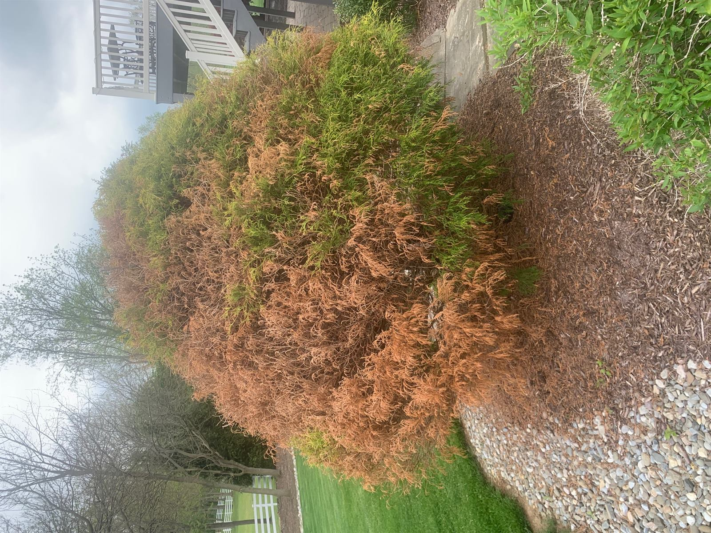
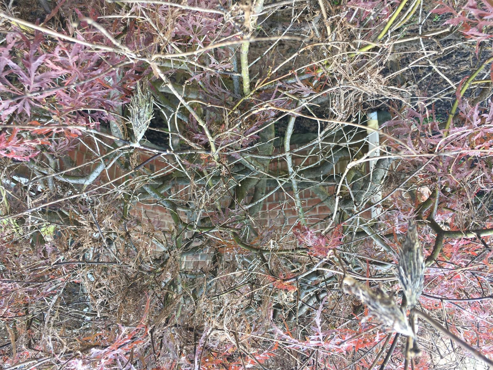
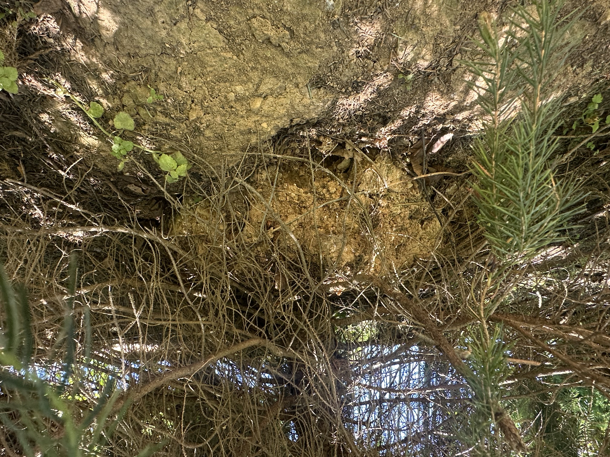

Evergreen Needles Browning or Dropping
This is our most common call, and the most misdiagnosed. Six different problems turn a spruce or arborvitae brown, and they look nearly identical from your driveway — but two of them are treatable, two will grow out on their own, and two mean no amount of spraying will help. Finding out which one you have is the entire ballgame.

Needle Cast (Rhizosphaera)
Classic on Colorado blue spruce: browning and purpling starts on inner, lower branches and works outward and upward over years. Infected needles drop, leaving bare interior branches. Fungal, and treatable — but timing matters, and recovery takes multiple seasons because spruce won't regrow needles on bare wood.

Spruce Spider Mites
Needles look dull, stippled, or bronzed rather than cleanly brown, often with fine webbing at the base. Worst in hot, dry stretches. Hold white paper under a branch and tap — moving specks confirm it. Frequently misdiagnosed as disease and sprayed with fungicide, which does nothing.

Bagworms
Those "pine cones" hanging off your arborvitae or spruce are caterpillar cases, and each one holds hundreds of eggs. They can strip and kill an arborvitae in a season or two. Timing is everything — treatment works on young larvae in early summer and is nearly useless once the bags seal in late summer.

Root & Planting Problems
Planted too deep, girdling roots, wire baskets left on, soil piled against the trunk, compaction, or drought stress. The tree browns from general decline rather than in a disease pattern. No spray fixes this — and this is why we diagnose before we quote.
Winter Burn & Desiccation
Browning on the windward or sun-exposed side, appearing in late winter or early spring on arborvitae, boxwood, holly, and rhododendron. The plant lost moisture it couldn't replace from frozen ground. Cosmetic damage that often grows out — worth waiting before anyone treats anything.
Deer Browse
Not a disease at all: clean-stripped lower branches with a distinct browse line, worst on arborvitae and yews in winter. Ragged torn ends rather than clean cuts, since deer have no upper front teeth. See deer damage repair & prevention.